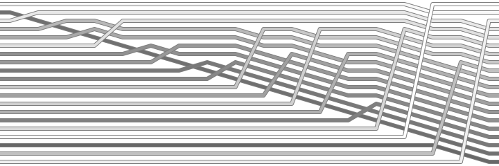
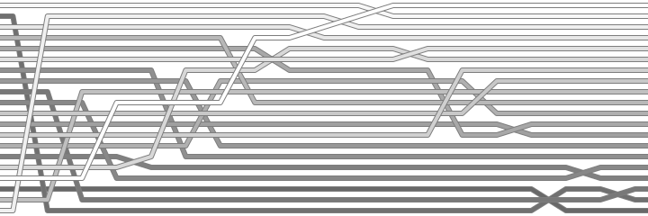
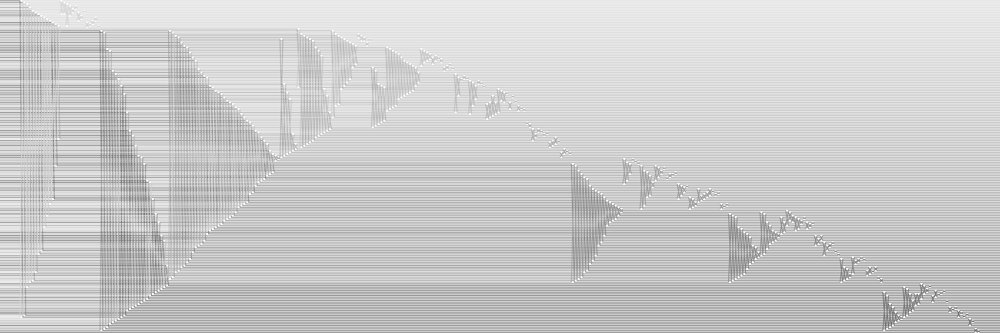
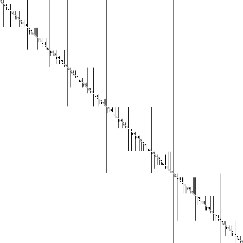
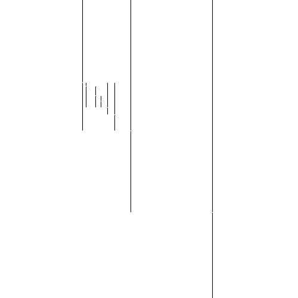

class: center, middle # Even more static visualization of sorting algorithms --- # Agenda 1. Introduction 2. Deep-dive 3. ... --- # Hungarians <iframe width="560" height="315" src="https://www.youtube.com/embed/lyZQPjUT5B4?rel=0&start=50" frameborder="0" allow="autoplay; encrypted-media" allowfullscreen></iframe> --- # Animations <iframe width="560" height="315" src="https://www.youtube.com/embed/BeoCbJPuvSE?rel=0" frameborder="0" allow="autoplay; encrypted-media" allowfullscreen></iframe> ??? After what percentage of time is half of the array sorted? Can you find an element that moved about half the length of the array to reach its final destination? What percentage of the array was sorted after 80% of the sorting process? How about 20%? Does the number of sorted elements grow linearly or non-linearly with time (i.e. logarithmically or exponentially)? --- # SortVis - Insertion Sort - 20 Elements  --- # SortVis - QuickSort - 20 Elements  --- # SortVis - QuickSort - 200 Elements  --- # Static - QuickSort - 500 Elements  --- # Static - QuickSelect - 500 Elements  --- ```bash git clone git@github.com:matthiasgoergens/static-sorting-visualisation.git cd static-sorting-visualisation.git stack install static-sorting-visualisation-exe images/quick_random_xy_500.png # A default collection of images: static-sorting-visualisation-exe ```